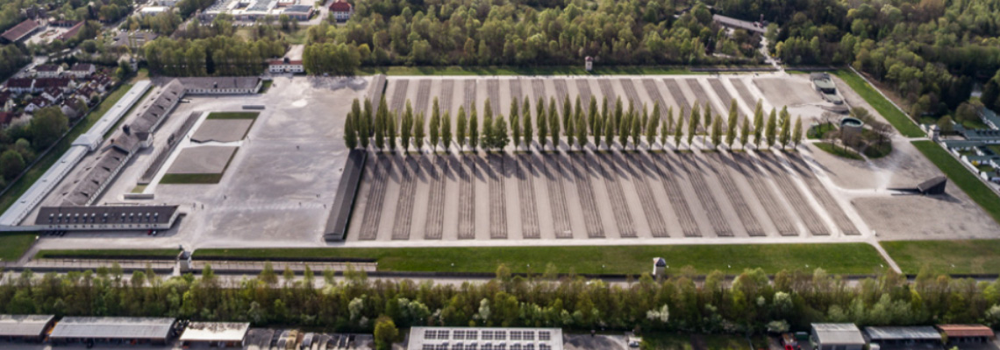

Programme
Depart pour Dachau vers 9h ou 10h
détailsVisite avec les audioguides du site

Repas du midi : Possibilité de manger au McDo à côté ou alors prévoir le repas
Voir carte
Visionnage du documentaire
Chill à l'appartement jusqu'au dinner
Dinner à l'appartement
Dodo à l'appartement
Possibilité d'échanger le matin et l'après-midi
Informations
Repas
Midi : Possibilité de manger au McDo qui est à côté ou prévoir le repas
Soir : A l'appartement
Prix
Dachau : Gratuit
Audioguides pour visiter le site : 3.5€
Réservation
Dachau + audioguides : Impossible en ligne
Transport
A actualiser 1 semaine avant
Appartement ➜ Dachau
1
commute : Bus 210
route : Neuperlach Süd
place : Neuperlach Süd
schedule :
timer : 14 min
2
commute : U5
route : Laimer Platz
place : Karlsplatz (Stachus)
schedule :
timer : 16 min
3
commute : S2
route : Altomünster
place : Dachau
schedule :
timer : 25 min
4
commute : Bus 726
route : Dachau, Saubachsiedlung
place : Dachau, KZ-Gedenkstätte
schedule :
timer : 7 min
Possibilité de prendre le S7 à la place du U5
Dachau ➜ appartement
1
commute : Bus 744
route : Dachau Bahnof
place : Dachau
schedule :
timer : 13 min
2
commute : S2
route : Ostbanhof
place : München Hauptbanhof
schedule :
timer : 20 min
3
commute : S2
route : Messestadt Ost
place : Karl-Preis-Platz
schedule :
timer : 11 min
4
commute : Bus X200
route : Taufkirchen, Lilienthalstraße
place : Taufk., W.-Messerschmitt-St.
schedule :
timer : 14 min
5
commute : Bus 210
route : Neuperlach Süd
place : Einsteinstraße
schedule :
timer : 3 min
Adresse
Dachau : Alte Römerstraße 75, 85221 Dachau
Autres remarques
Film documentaire
Anglais : 10h15, 11h45, 14h
Français (sur demande) : 12h30, 15h30
Durée : entre 30 et 45 min